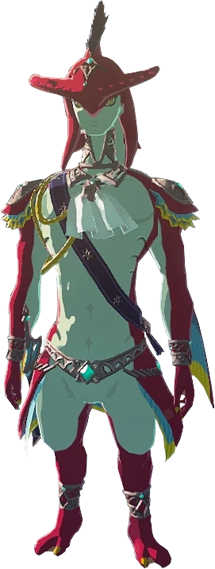

Welcome!
Here we are, talking about SIDON. What do we think of when we say the word, "SIDON"? Well, for I, I think of various things. The first thought I shall not mention because I do not think that most people would take a liking to what I would say, so it's better if I keep it safe in my head burried away from the judgement of the public. What a shame.... Nah. More like shame on me. Because I am straight up thinking about SIDON. Like. SIDON SIDON, man. Oh no, now I am craving fish for lunch. Curse you, Sidon!

Hey there! ^_^

O_O
